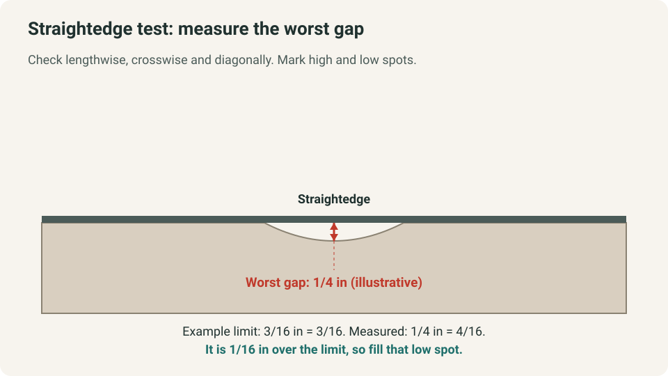
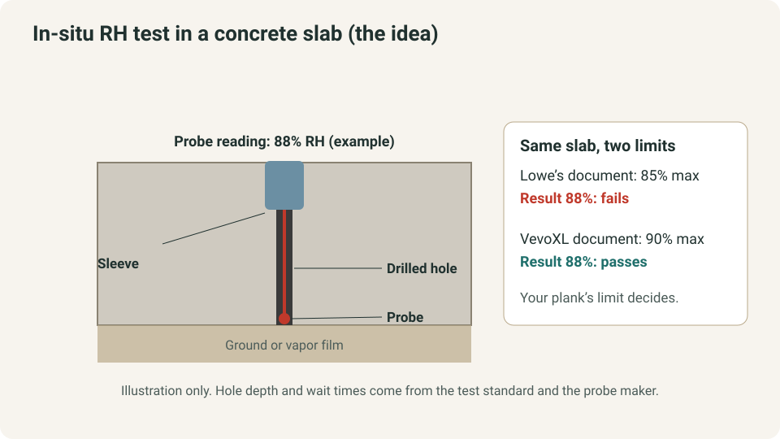
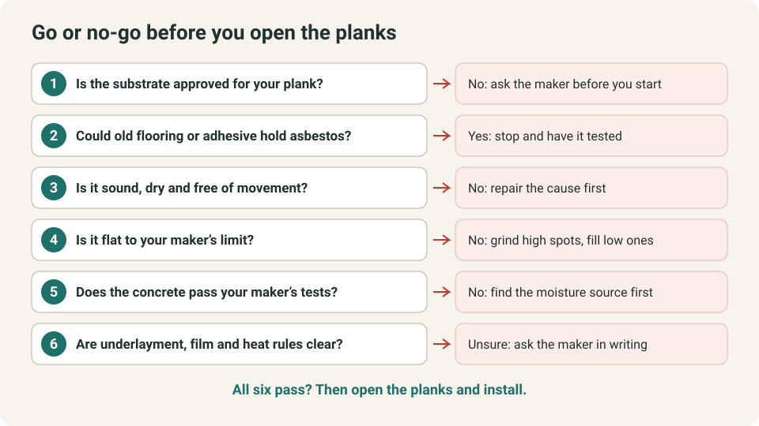

WEEKEND PROJECTS · FLOORING
How to Prepare a Subfloor for LVP (Flatness, Moisture, Concrete Tests)

Luxury vinyl plank (LVP) looks forgiving, but it is installed floating, so every bump, damp patch and soft spot underneath can show up later or void the warranty. Preparation is a series of pass-or-fail checks, and the limits come from the maker of your exact plank, not from a general rule. This guide shows how to check what you have, measure it and know when to stop, using two real installation documents as examples.
The quick answer
- Read your plank’s instructions first. The two documents opened for this guide agree on flatness (3/16 inch over a 10-foot radius) and on testing concrete. They disagree on moisture limits, concrete cure time and pH range, so never average them.
- Check for asbestos before you touch old flooring. Old resilient flooring, backing and adhesive may contain it. Do not sand, scrape or saw it, and stop if you cannot rule it out.
- Test concrete and keep the results. Both documents require moisture testing on concrete, and “waterproof” plank is not a moisture barrier.
- Fix the cause, not the symptom. Leveling compound does not cure a soft, wet or moving subfloor.
Quick plan
| Item | Detail |
|---|---|
| Time | Hours for the checks. Leveling products and concrete tests add waiting time |
| Cost | Mostly a long straightedge, leveling or patching compound and a moisture test if you cannot do it yourself |
| Best for | Click-lock vinyl plank over concrete or a sound wood subfloor |
| Not for | Suspected asbestos flooring, wet or rotted subfloor, glue-down installations |
| Goal | A clean, dry, sound, flat surface that your plank’s maker accepts |
Step 1: Identify the substrate and read your plank’s rules
Start with what is under the old floor, then compare it with the list in your plank’s instructions. Two real documents show how lists differ.
| Status | Lowe’s rigid-core SPC document (file 63177847) | VevoXL SPC instructions (2024) |
|---|---|---|
| Approved | Concrete, plywood, OSB, particleboard, solid or engineered hardwood on a plywood subfloor, ceramic or stone tile, non-cushion sheet vinyl, resilient tile | CDX plywood at least ½ in, underlayment-grade particleboard, OSB at least ¾ in, concrete slab, existing wood floor, ceramic tile, resilient tile and sheet vinyl |
| Not approved | Carpet and pad, cushioned vinyl, floating floors, laminate, sleeper construction, rubber, cushion-back vinyl, hardwood laid on concrete | Not listed in the text opened here |
The Lowe’s document names no product, only the file number in its link, so treat both as examples of what makers publish rather than rules for your floor.
Step 2: Stop for asbestos before you disturb old flooring
The Lowe’s document says that if you remove resilient flooring that contains or is presumed to contain asbestos, you must follow all applicable regulations. It says not to sand, dry sweep, dry scrape, drill, saw, bead blast or mechanically chip or pulverize resilient flooring, backing, lining felt or old “cut-back” adhesive, and to presume asbestos is present unless you are positively certain it is not. The VevoXL document says not to sand existing vinyl floors because they may contain asbestos.
If old tile, sheet flooring or black adhesive is in doubt, stop. Have a qualified professional test it before any plan that would disturb it.
Step 3: Check that the subfloor is sound and dry
Flat and sound are different tests. A floor can be flat and still flex, or firm and still have bumps. Both documents ask for a subfloor that is structurally sound and dry; the Lowe’s document adds no deflection, and no installation over wood subfloors laid directly on concrete or over sleeper construction.
- Walk the room and listen for squeaks, flex and loose panel edges.
- Replace or repair swollen, delaminated or rotten wood. VevoXL says to nail or screw wood subfloors every 6 inches along the joists to avoid squeaks.
- Look for stains, damp patches and cracked or crumbling concrete. A leak or damp slab needs its source fixed, not a cover-up.
- Over a crawl space, both documents give ground rules: at least 18 inches from the ground to the joists, a ground cover of 6-mil polyethylene, and ventilation. Start with our guides on fixing damp crawl space humidity and sizing a dehumidifier for a crawl space.
If the floor is spongy, sagging or wet, stop. That needs repair, not preparation.
Step 4: Measure flatness with a straightedge
Both documents ask for the subfloor to be flat to 3/16 inch over a 10-foot radius. The Lowe’s document adds a slope of no more than 1 inch per 6 feet and no abrupt height differences. “Level” is not the same as “flat”: a floor can slope gently and still be flat enough, or be level overall with local humps and dips.

- Lay a long straightedge or level (ideally 10 feet) on the floor lengthwise, then crosswise, then diagonally.
- Measure the largest gap beneath it with a ruler or feeler gauge.
- Mark high spots and low spots in different colors.
- Compare each gap with the limit in your own instructions.
Worked example (illustrative). Your maker allows 3/16 inch over 10 feet. The worst gap measures 1/4 inch. 1/4 inch is 4/16 inch, which is 1/16 inch over the limit, so that low spot needs filling before you start. If another maker states a different distance, measure over that distance, because the two limits are not interchangeable.
Correcting it. The Lowe’s document says high spots should be sanded or ground down and low areas filled, naming a cementitious patching or leveling compound for concrete. VevoXL names a Portland-based leveling patch for wood and concrete. Check that your product is allowed for your plank.
Grinding concrete makes silica dust. OSHA’s fact sheet for construction workers lists two controls for handheld grinders: water applied continuously to the wheel (outdoors only) or a shroud with a vacuum dust collection system. It adds that a vacuum system indoors may not keep exposure low and extra ventilation may be needed, and it says not to clean with compressed air or blowers but with a HEPA vacuum or wet methods. For more than a small spot, consider hiring a pro.
Step 5: Test concrete for moisture and pH
The Lowe’s document says to test all concrete subfloors for moisture and document the results, because visual checks are not reliable. VevoXL says its warranty requires moisture testing before installing on concrete. The Lowe’s document also says moisture must be checked even though vinyl plank is waterproof, to protect the surrounding structure, and VevoXL says its flooring is waterproof but not a moisture barrier.

| Item | Lowe’s rigid-core SPC document | VevoXL SPC instructions (2024) |
|---|---|---|
| Relative humidity (ASTM F2170) | 85% maximum | 90% maximum |
| Calcium chloride (ASTM F1869) | Less than 8 lb per 1,000 sq ft per 24 hours | 8 lb maximum |
| Concrete pH | 7 to 9 (ASTM F710) | 6 to 10 |
| New concrete cure | At least 90 days | At least 60 days |
| Moisture film | 6-mil film recommended over concrete; required above 85% RH or if slab moisture cannot be verified | 6-mil film between the concrete and the ground |
| Wood subfloor | Never above 14% moisture; APA-approved, minimum grade BB or CC | “Dry and well secured” |
The Lowe’s document also lists a 4% reading on a Tramex concrete moisture meter as one of its three criteria. Neither document lists taping plastic to the slab as an approval test, so use the methods your plank’s maker names.
Worked example (illustrative). A probe reads 88% relative humidity. That passes a 90% limit and fails an 85% limit. Same slab, different answer: the limit comes from your product, not from the slab. If a slab fails, find the moisture source first. A film is not a cure, and a maker may require a complete system for those conditions.
Step 6: Prepare a wood subfloor
- Check that the panels meet your plank’s rules. The Lowe’s document asks for APA-approved panels of minimum grade BB or CC, and VevoXL gives minimum thicknesses.
- Test moisture with a reliable meter in several places. The Lowe’s document says readings should never exceed 14% for plywood, OSB, particleboard, chipboard and solid hardwood subfloors, and that higher readings must be corrected first.
- Secure loose areas and set protruding nails or screws. Do not drive fasteners blindly where pipes, wires or heating may run.
- Fill low spots with a product allowed for wood. Do not assume a concrete patch or primer suits wood.
Step 7: Decide whether the old floor can stay
| Existing floor | Lowe’s rigid-core SPC document | VevoXL SPC instructions (2024) |
|---|---|---|
| Vinyl sheet or resilient tile | One layer only, firmly attached; cushioned vinyl is not approved | Well-bonded, in good condition, clean and level; do not sand |
| Ceramic tile | Firmly attached; one page says grout lines need no filling, another says to fill grout lines wider than 1/4 in | Well-bonded, clean and level |
| Carpet, laminate, floating floors | Not approved: remove | Not listed in the text opened here |
The Lowe’s document contradicts itself on grout lines. When two pages disagree, ask the maker in writing instead of choosing the easier answer, and still meet the flatness limit.
Step 8: Underlayment, moisture film and radiant heat
These are three separate decisions.
- Underlayment. The Lowe’s document says its flooring has a pre-attached pad, so no underlayment is needed, and an extra pad voids the warranty. VevoXL says additional foam is not required if foam is already attached.
- Moisture film. See the table above. It depends on the slab result and the maker, not on a habit.
- Radiant heat. Both documents set a maximum floor surface temperature of 85°F. The Lowe’s document allows electric and hydronic systems when the components are at least 1/2 inch below the flooring, asks for the system to run for two weeks before installation, and says not to lay the floor directly over heating mats. VevoXL says it is best to install over hydronic systems and does not recommend heating mats directly beneath its floor.
Confirm both the flooring maker’s and the heating-system maker’s instructions. If you cannot, ask a pro.
Step 9: Clean, condition and record
- Remove dust, debris and anything stuck to the surface. The Lowe’s document says no debris, soil or protrusions should remain.
- Condition the room as directed. The Lowe’s document asks for a constant temperature for 48 hours before, during and after installation. VevoXL asks for planks to sit in the room at least 24 hours and for normal living conditions for a week before.
- Recheck repaired areas with the straightedge once patches have cured.
- Keep the instructions, test results and receipts with your project notes.
Go or no-go check before you open the planks

If any answer is unknown, resolve it before you open and install the planks.
Quick win (15 minutes)
Slide a straightedge across the room in three directions and mark with tape where light shows under it. Those marks are your low spots, and they tell you whether you need a leveling product at all.
Common mistakes
- Skipping the concrete test because the slab looks dry.
- Treating one maker’s numbers as a rule for every plank.
- Ignoring a flatness gap because the planks click together.
- Covering old adhesive or flooring that may contain asbestos.
- Adding a second pad where the instructions forbid it.
- Using leveling compound to hide movement or moisture.
When to call a professional
- You suspect asbestos in old flooring or adhesive.
- A slab fails its test, or you find damp, mold or rot.
- The floor is badly out of level, spongy or sagging.
- Radiant heat is present and you cannot confirm the temperature limits.
- Concrete needs more than a small spot of grinding.
FAQ
Can I install LVP over concrete?
Often yes, but the slab must meet the maker’s flatness, cleanliness, moisture and pH requirements. Both documents list concrete as an approved substrate and require testing.
Can I install LVP over old vinyl?
Sometimes. The Lowe’s document allows one layer of firmly attached, non-cushion vinyl and does not approve cushioned vinyl. VevoXL allows well-bonded resilient tile and sheet vinyl in good condition. Do not sand old vinyl.
Can I install LVP over tile?
Both documents approve ceramic tile if it is firmly bonded and flat. Grout lines are a conflict in the Lowe’s document, so ask the maker.
Do I need underlayment?
Not when the plank has a pad attached. The Lowe’s document says an extra pad voids the warranty, so follow your instructions.
How long must new concrete cure?
The Lowe’s document says at least 90 days and VevoXL says at least 60. A calendar period does not replace the required moisture test.
Do I need a vapor film under or over the slab?
It depends on the maker and the test result. The Lowe’s document recommends 6-mil film over concrete and requires it above 85% relative humidity or when slab moisture cannot be verified. VevoXL asks for 6-mil film between the concrete and the ground.
What this guide assumes
It covers click-lock, floating vinyl plank in a typical U.S. home and uses two rigid-core installation documents as examples. It is not for glue-down floors, and it does not replace your product’s instructions, local code or a professional assessment. HomeProjectWise has not performed this work. We do not endorse a brand or product.
Keep going
- How to fix damp crawl space humidity if the floor sits over a crawl space.
- What size dehumidifier for a crawl space to size the equipment.
- How to reduce bathroom condensation if the room is a bathroom.
Sources and last checked
All three documents were opened and read on 14 November 2026. The two installation documents are product-specific examples, and your own plank’s instructions override them.
- Lowe’s rigid-core SPC document (file 63177847): https://pdf.lowes.com/productdocuments/4c3436b4-eaf4-4dd2-b203-79b01103d77b/63177847.pdf
- VevoXL SPC installation instructions (2024): https://cdn.shopify.com/s/files/1/0595/2389/1315/files/VevoXL_Installation_Instructions_Updated_2024.pdf
- OSHA, “Handheld Grinders for Tasks Other Than Mortar Removal” (FS-3628, 12/2017): https://www.osha.gov/sites/default/files/publications/OSHA_FS-3628.pdf